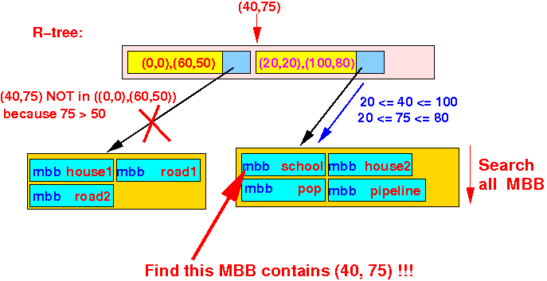
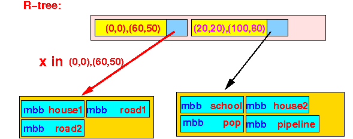
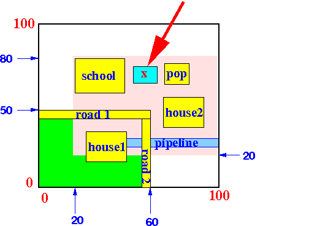

- Bounding Box:
- Bounding Box = a rectangle that contains a group of objects
- Example:
- A group of
objects:
- A Bounding Box:
- A group of
objects:
- Minimum Bounding Box:
- Minimum Bounding Box = the smallest rectangle that contains a group of objects
- Example:
- A group of
objects:
- The Minimum Bounding Box:

- A group of
objects:
- Note:
- A rectangle
can be represented as
follows:
Rectangle: coordinate of the lower left corner coordinate of the upper right cornerExample:
- A rectangle
can be represented as
follows:
- R-tree:
- R-tree =
an index tree-structure
derived from
the B-tree
that uses multi-dimensional indexes
- The internal nodes contains
a number of entries of the
follwoing format:
- The leaf nodes contains
a number of entries of the
follwoing format:
- R-tree =
an index tree-structure
derived from
the B-tree
that uses multi-dimensional indexes
- Property of a R-tree:

- Example: R-tree
- Objects that we want to
represent:
- The objects:
- house1, road1 and road2
are completely enclosed by the bounding box ((0,0),(60,50):
- The objects:
- school, pop , house2 and pipeline
are completely enclosed by the bounding box ((20,20),(100,80):
- Here is a R-tree that uses
the bounding boxes above:
- Objects that we want to
represent:
- Note:
- The bounding boxes used in R-tree nodes can overlap !!!
- Search Algorithm for a Point(x,y):
- The search algorithm is
recursive
- The search starts at the root node of the R-tree
- The search algorithm is
recursive
- Recursive search algorithm for
a Point P(x,y) when the
current node is
n:
/* ================================================ Lookup( (x,y), n, result ) (x,y) = coordinate of a point n = current node of search result = output ================================================= */ Lookup( (x, y), n, result ) { // n = current node of the search in the R-tree if ( n == internal node ) { for ( each entry ( BB, childptr ) in node n ) do { /* ==================================== Look in subtree if (x,y) is in box ==================================== */ if ( (x,y) ∈ BB ) { Lookup( (x,y), childptr, result); } } } else { for ( each object Ob in node n ) do { if ( (x,y) ∈ MBB(Ob) ) { Add Ob to result; } } }
- Example:
Find the object(s) that contain
the point P(40,75):
Result:
- Because:
- point P(40,75) ∉ bounding box ((0,0),(60,50)) and
- point P(40,75) ∈ bounding box ((20,20),(100,80))
we only search the 2nd subtree:
- By searching the
MBB information in
the leaf node,
we will be able to
find the
school object:

- Because:
- Simplification:
- We represent an
object by its
Minimum Bounding Box
Example:
- We represent an
object by its
Minimum Bounding Box
- Containment relationship of
bounding boxes:
- A bounding box A is
contained in a
bounding box B iff:
xLL(B) ≤ xLL(A) and yLL(B) ≤ yLL(A) xUR(A) ≤ xUR(B) and yUR(A) ≤ yUR(B)Graphically:
- A bounding box A is
contained in a
bounding box B iff:
- Search algorithm for
objects in an
R-tree:
- Is similar to the search algorithm for points using the containment relationship for bounding boxes.
- Insert Algorithm for an object
ObjID:
- The insert algorithm is
also
recursive
- The insert starts at the root node of the R-tree
- The insert algorithm is
also
recursive
- Recursive insert algorithm for
an Object ObjID
with
bounding box
mbb when the
current node is
n:
/* ================================================ Insert( (mbb,ObjID), n) (mbb,ObjID) = object with given mbb n = current node of operation ================================================= */ Insert( (mbb, ObjID), n ) { // n = current node of the search in the R-tree if ( n == internal node ) { for ( each entry ( BB, childptr ) in node n ) do { /* ====================================================== Insert object in subtree if its mbb is contained by BB ====================================================== */ if ( mbb ⊆ BB ) { /* ---------------------------------------------- Insert the object in this subtree !!! ---------------------------------------------- */ Insert( (mbb,ObjID), childptr); // Just recurse !! /* ---------------------------------------------- The recursion WILL have inserted the object ! ---------------------------------------------- */ return; // Terminates the recursion !!! } } /* **************************************************** We can ONLY reach here when EVERY BB in the node n FAILS to contain the object !!! **************************************************** */ Find a BB in n such that: Enlarging BB to contain the object will add the least amount of area to the bounding box BB Update this BB in n by the Enlarged BB; (Note: We do not need to update the BB in the parent node because THAT BB contains the insert object) /* ====================================================== Now the enlarged BB contains the object !!! ====================================================== */ Insert( (mbb,ObjID), childptr); // Just recurse !! } else { /* ================================================= We found the leaf node to hold the object !!! ================================================= */ if ( leaf node has space to hold object ) { insert (mbb, ObjID) in the leaf node; } else { Split the leaf node into 2 nodes; // Tough... Find the bounding box for all the objects in each node; Replace the parent's (1) BB by of the 2 bounding boxes; (The parent node can overflow and split. You need a Insert procedure into an internal node - just like the B-tree algorithm) } } }
- Insert example 1:
- Insert the object x
into the R-tree:
Steps of the Insert Algorithm:
- The first BB contains
x:

- Because there is space in
the leaf node,
we insert the
object x there:
- Insert the object x
into the R-tree:
- Insert example 2:
- Insert the object x
into the R-tree:
Steps of the Insert Algorithm:
- We cannot find
any BB that contains
the object x:
- We must
augment
one of the BB to
include
the object x:
Note:
- The fact that we are
searching in the
current node must mean:
- The BB in the parent node contains the object x !!!
- Therefore:
- There is no need to update the BB in the parent node !!!
- The fact that we are
searching in the
current node must mean:
- We can insert
the object x in the
leaf node:
Result:

- Insert the object x
into the R-tree:
- Insert example 3:
- Insert the object x
into the R-tree:

Steps of the Insert Algorithm:
- We find a
BB that contains
the object x:
However, the leaf node is full:
- We partition the objects into 2 groups
- Suppose we partition
the objects as
follows:
- The new
R-tree is then:
- Insert the object x
into the R-tree:
- Suppose a leaf node
contains the
following objects:
- We insert the following
object:
- The node is now
overflow and we
want to
split the
objects into
2 groups.
How should the objects be split ????
- An obvious choice is:
- A not so obvious choice is:
This is a superior split because:
- The total area of the bounding box is smaller
- An obvious choice is:
- Problem description:
- Given a set of n
objects
- Find the partitioning
of the n
objects
into
2 groups A and B such that:
AreaOfMBB(objects in A) + AreaOfMBB(objects in B) = minimal
- Given a set of n
objects
- Naive Algorithm:
S = all possible subsets of {1 , 2, 3,...., n}; s1 ∈ S; best_A = s1 best_B = {1,2,3,...,n} - s; minArea = AreaOfBB(objects in A) + AreaOfBB(objects in B); for ( each subset s ∈ S - s1 ) do { A = s; B = {1,2,3,...,n} - s; Area = AreaOfBB(objects in A) + AreaOfBB(objects in B); if ( Area < minArea ) { best_A = A; best_B = B; } }
- Apparently, there exists a
O(n2)
algorithm
to find the
best partitioning....
(Don't know it and this topic is outside the scope of the course)